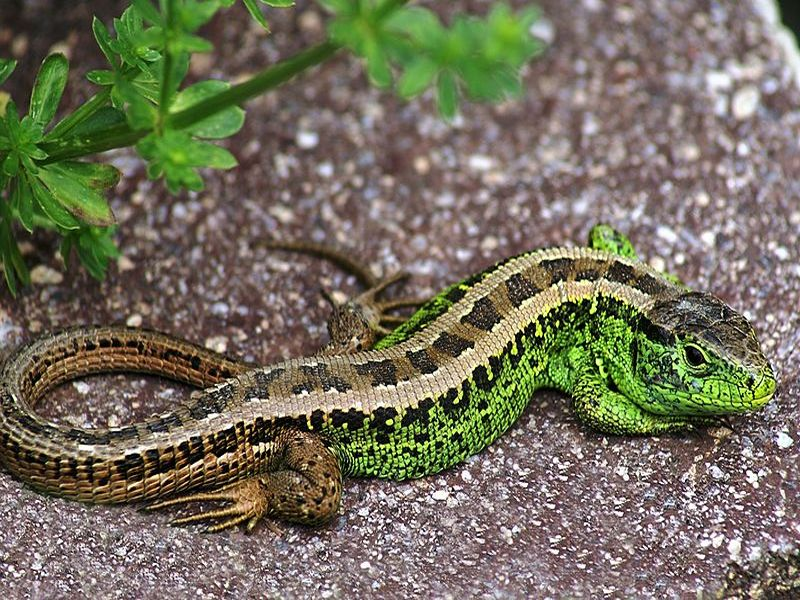

Zauneidechse
Lacerta agilis
Die Zauneidechse bevorzugt trocke-warme Biotope wie Feldraine, Straßenböschungen und Hecken. Die Riedlandschaft hat sie erst nach deren Trockenlegung erobert. Dort treffen wir die lebhaft gefärbten Tiere vornehmlich im Bereich der Torfabbaustellen an. Als Sonnenplätze sind die Trockenen aufgestapelten Torfmieten besonders beliebt. Hier finden die Echsen auch die gewünschte Nahrung: Insekten und Spinnentiere.